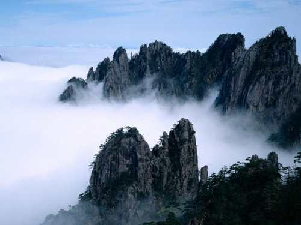
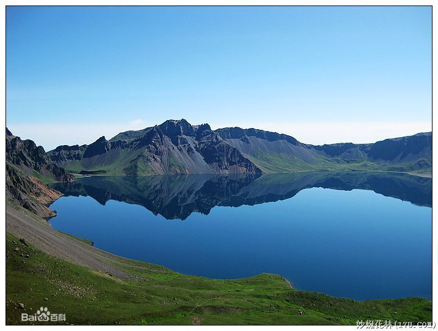
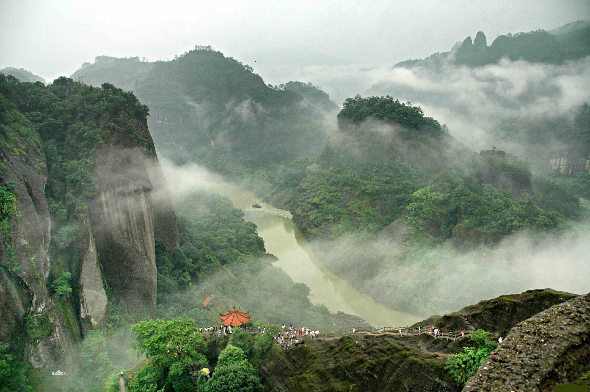
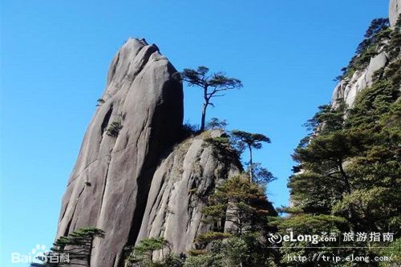
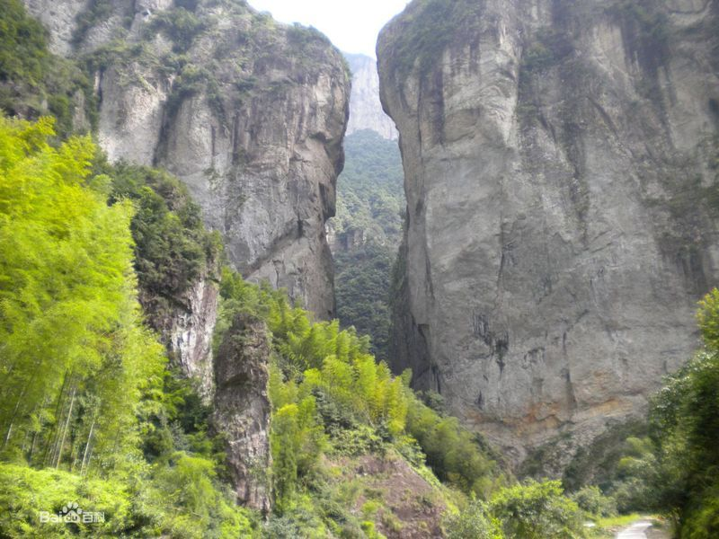
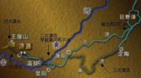

| ▪ 泰山 ( 山东)35 | ▪ 黄山 ( 安徽)35 | ▪ 峨眉山 ( 四川) | ▪ 庐山 ( 江西)35 | ▪ 珠穆朗玛峰 ( 西藏) |
| ▪ 长白山 ( 吉林) | ▪ 华山 ( 陕西)35 | ▪ 武夷山 ( 福建) | ▪ 玉山 ( 台湾) | ▪ 五台山 ( 山西) |
| sn | Mountain | Location | peak | Height(m) | Remark | picture |
|---|---|---|---|---|---|---|
| 1 | 东岳泰山 | 泰安市（地级市）。 绵亘于泰安、济南、淄博三市之间 | 玉皇顶 | 1532.7 |  |
|
| 2 | 安徽黄山 | 安徽省南部黄山市 | 莲花峰 | 1864.8 | 奇松，怪石，云海，温泉 |  |
| 3 | 四川峨眉山 | 四川峨眉山市 | 万佛顶 | 3099 | “雄、秀、神、奇、灵”和深厚的佛教文化 |  |
| 4 | 江西庐山 | 江西省北部名山，位于九江县以南，星子县以西 | 汉阳峰 | 1474 |  |
|
| 5 | 珠穆朗玛峰 | 中国西藏与尼泊尔交界处 | 8844.43 | |||
| 6 | 长白山 | 吉林省和朝鲜两江道三池渊郡 | 白云峰 | 2691 |  | |
| 7 | 华山 | 陕西省华阴市 | 南峰 | 2154.9 |  |
|
| 8 | 武夷山 | 福建省的西北部，毗邻江西省 | 黄岗山 | 2158 |  | |
| 9 | 玉山 | 中国台湾省中部 | 玉山 | 3997 |  | |
| 10 | 五台山 | 山西省忻州市繁峙县，五台县 | 北台叶斗峰 | 3061.1 | 与四川峨嵋山、安徽九华山、浙江普陀山共称“中国佛教四大名山”。是中国佛教及旅游胜地，列中国十大避暑名山之首。 |  |
| sn | Mountain | Location | peak | Height(m) | Remark | picture |
|---|---|---|---|---|---|---|
| 1 | 浙江雁荡山 | 浙江温州市境和台州市南部 | 百岗尖 | 1150 |  | |
| 2 | 江西庐山 | 江西省北部名山，位于九江县以南，星子县以西 | 汉阳峰 | 1474 | |
|
| 3 | 安徽黄山 | 安徽省南部黄山市 | 莲花峰 | 1864.8 | 奇松，怪石，云海，温泉 | |
| sn | Mountain | Location | peak | Height(m) | Remark | picture |
|---|---|---|---|---|---|---|
| 1 | 东岳泰山 | 泰安市（地级市）。 绵亘于泰安、济南、淄博三市之间 | 玉皇顶 | 1532.7 | |
|
| 2 | 西岳华山 | 陕西省华阴市 | 南峰 | 2154.9 | |
|
| 3 | 南岳衡山 | 湖南省衡阳市南岳区 | 祝融峰 | 1300.2 | 祝融峰之高、藏经殿之秀、水帘洞之奇、方广寺之深堪称“衡山四绝”；春观花、夏看云、秋望日、冬赏雪为“衡山四季佳景”。 |  |
| 4 | 北岳恒山 | 山西省大同市浑源县 | 天峰岭在浑源县城南 | 2016.8 |  |
|
| 5 | 中岳嵩山 | 河南省西部 | 御寨山上连天峰为嵩山之西峰 | 1512 |  |
| sn | Mountain | Pass | Source | Long(km) | current | Lake | picture |
|---|---|---|---|---|---|---|---|
| 1 | 长江 | 青藏高原-青海（青）-西藏（藏）-四川（川）-云南（滇）-重庆（渝）-湖北（鄂）-湖南（湘）-江西（赣）-安徽（皖）-江苏（苏）-上海（沪）注入东海 | 唐古拉山的沱沱河 | 6397 | 有雅砻江、岷江、沱江、赤水河、嘉陵江、乌江、湘江、沅江、汉江、赣江、青弋江、黄浦江等\京杭运河 | 滇池、草海、洪湖、洞庭湖、鄱阳湖、巢湖、太湖 |  |
| 2 | 黄河 | 青海、四川、甘肃、宁夏、内蒙古、陕西、山西、河南及山东9个省，最后流入渤海 | 巴颜喀拉山北麓的卡日曲、约古宗列曲 | 5464 | 有35条主要支流，白河、黑河、湟水、祖厉河、清水河、大黑河、窟野河、无定河、汾河、渭河、洛河、沁河、大汶河、汴河等。其中渭河为黄河的最大支流。 | 扎陵湖、鄂陵湖、乌梁素海、东平湖。 |  |
| 3 | 淮河 | 河南、安徽、江苏、山东及湖北 | 河南省嵩县车村镇境内，淮河最上源的溪流名为东沙沟 | 1000 | 左岸有洪河、谷河、润河、颍河、西淝河、芡河、涡河、漴潼河、濉河等，还有大型人工河道新汴河和茨淮新河，一般都源远流长，具平原河道特征；右岸有史灌河、沣河、汲河、淠河、东淝河、窑河、小溪河、池河、白塔河等 | 八里湖、焦岗湖、四方湖、香涧湖、沱湖、天井湖等；右岸有城西湖、城东湖、瓦埠湖、高塘湖、花园湖、女山湖、七里湖、高邮湖、沂湖、洋湖等 | |
| 4 | 济水 | 河南、山东 | 古人把有独立源头，并能入海的河流称为“渎”。《尔雅》中提到的四渎：江、河、淮、济，就是古代四条独流入海的河流，“济”指的就是济水。古皇帝祭祀名山大川，即指五岳和四渎。唐代以大淮为东渎，大江为南渎，大河为西渎，大济为北渎。 | 现在黄河下游地段以及大清河(原址为东平湖到黄河入海口一段）、小清河（现东阿镇西东平湖入黄河的一小段河叫小清河），就是原济水故道。 |  |

{kind=link}
{kind=link}
{kind=link}
{kind=link}
{kind=link}
{kind=link}
{kind=link}
{kind=link}
| sn | Name | Remark | picture | |||
|---|---|---|---|---|---|---|
| ▪ 黄龙溪 ( 成都) | ▪ 都江堰景区 ( 成都) | ▪ 宽窄巷子 ( 成都) |
| ▪ 四姑娘山 ( 成都) | ▪ 杜甫草堂 ( 成都) | ▪ 武侯祠 ( 成都) |
| ▪ 青羊宫 ( 成都) | ▪ 文殊院 ( 成都) | ▪ 卧龙自然保护区 ( 阿坝州) |
| ▪ 峨眉山 ( 峨眉山) | ▪ 九寨沟风景名胜区 ( 九寨沟) | |
| ▪ 洛带古镇 ( 成都) | ▪ 平乐古镇 ( 成都) | ▪ 西岭雪山 ( 成都) |
| ▪ 锦里 ( 成都) | ▪ 金沙遗址博物馆 ( 成都) | ▪ 三星堆博物馆 ( 成都) |
| ▪ 青城山 ( 都江堰) | ▪ 邛崃天台山风景区 ( 成都) | |
| ▪ 苍溪红军渡景区 ( 苍溪) | ▪ 红四方面军总指挥部旧址 ( 通江) | ▪ 东方佛都 ( 乐山) |
| ▪ 西昌卫星发射基地 ( 西昌) | ▪ 自贡彩灯博物馆 ( 自贡) | ▪ 百里峡 ( 宣汉) |
| ▪ 泸沽湖旅游景区 ( 盐源) | ▪ 龙潭溶洞风景区 ( 攀枝花) | ▪ 寻龙山景区 ( 北川) |
| ▪ 成都欢乐谷主题公园 ( 成都) | ▪ 望江楼公园 ( 成都) | ▪ 大熊猫繁育研究基地 ( 成都) |
| ▪ 猎人峰 ( 成都) | ▪ 金堂云顶山风景区 ( 成都) | ▪ 大慈寺 ( 成都) |
| ▪ 成都植物园 ( 成都) | ▪ 九峰山 ( 成都) | ▪ 昭觉寺 ( 成都) |
| ▪ 永陵 ( 成都) | ▪ 宝光寺 ( 成都) | ▪ 崇州文庙 ( 成都) |
| ▪ 龙池国家森林公园 ( 都江堰) | ▪ 合江佛宝 ( 合江) | ▪ 盐业历史博物馆 ( 自贡) |
| ▪ 蒙山风景名胜区 ( 雅安) | ▪ 纳溪方山旅游区 ( 泸州) | ▪ 邛崃天台山旅游区 ( 邛崃) |
| ▪ 玉蟾山旅游区 ( 泸县) | ▪ 绵阳匡山佛爷洞 ( 绵阳) | ▪ 郫县友爱镇农科村 ( 郫县) |
| ▪ 佛宝森林公园 ( 合江) | ▪ 锦屏风景名胜区 ( 阆中) | ▪ 大邑刘氏庄园 ( 成都) |
| ▪ 崇州九龙沟 ( 成都) | ▪ 什邡穿心店地震遗址 ( 成都) | ▪ 小通巷 ( 成都) |
| ▪ 什邡蓥华山风景区 ( 成都) |